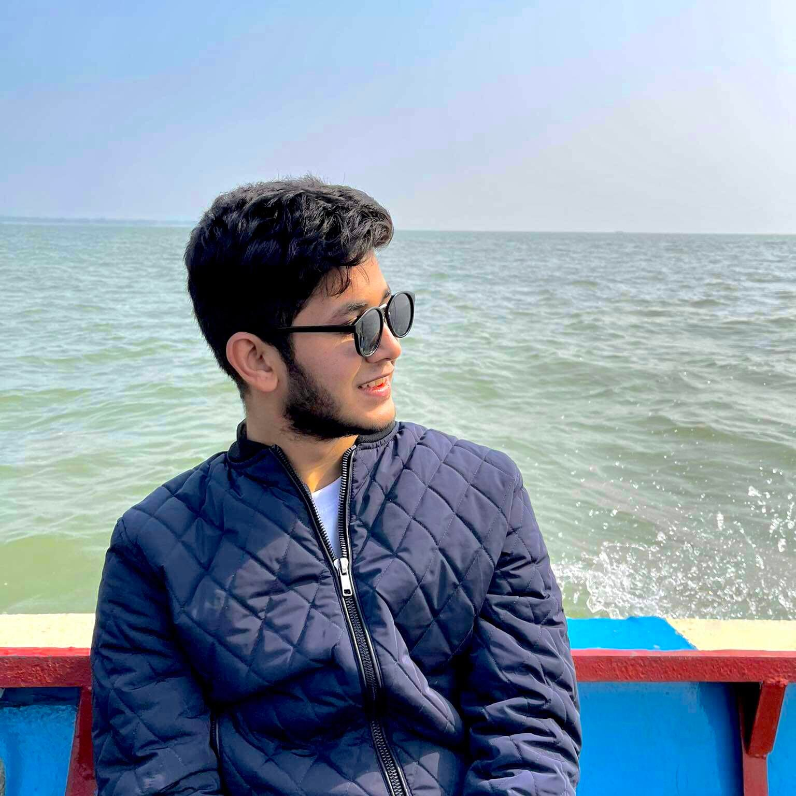

Tahsin Masnoon Sami
Born in 2000
Bangladeshi
Studing in final year student in University Teknologi of Malaysia

Education
College-Maple Leaf International School(Grudated in 2021) Higher Studies-Universiti Teknology of Malaysia(Software Engineering)
For my Master i'm planning to take an opportunity in Australia.